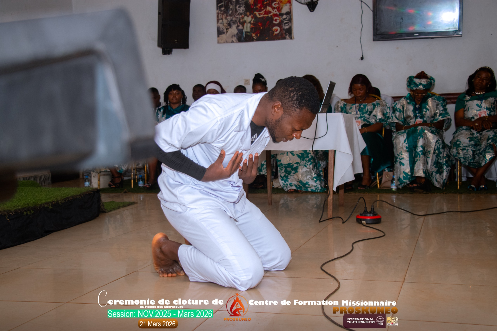
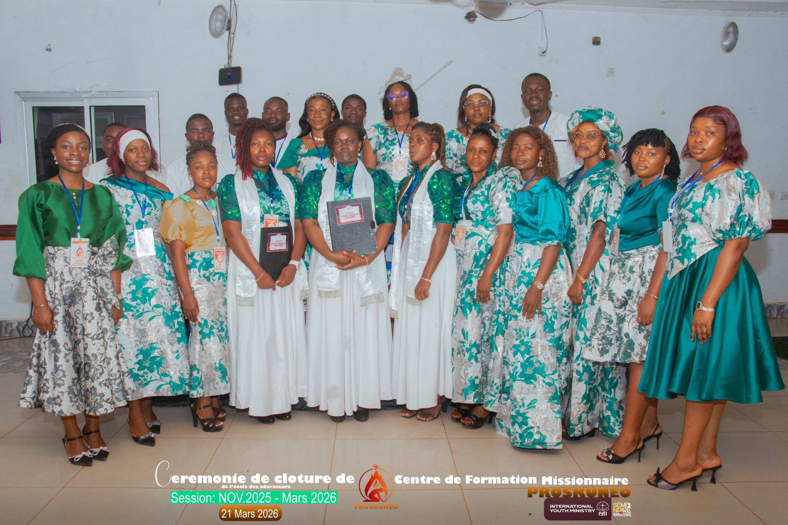

01 — Mission
Former les Chantres
Former et équiper les chantres et les conducteurs de louange pour un ministère d'excellence selon le modèle divin.
En savoir plus →Sainteté · Profondeur · Puissance
Une école de transformation, d'intimité et de rencontre avec notre intime Jésus. Bâtir et équiper les adorateurs missionnaires.
Durée
4 Mois
Formation
Théorie + Pratique
Accès
Sous réservation


Depuis 4 ans
Portes ouvertes, cœurs transformés
Qu'est-ce que c'est ?
L'École des Adorateurs est une école de transformation, d'intimité et de rencontre avec notre intime Jésus.
« Depuis 4 ans que ses portes furent ouvertes, elle a formé plusieurs adorateurs en son sein, équipés pour manifester l'adoration véritable. »
Portée par le Centre de Formation Missionnaire PROSKUNEO, cette école répond à l'appel divin de former une génération d'adorateurs qui feront brûler le feu du réveil dans toutes les nations.
Nos Missions
Quatre axes d'action pour bâtir le royaume de Dieu par la louange et l'adoration.
01 — Mission
Former et équiper les chantres et les conducteurs de louange pour un ministère d'excellence selon le modèle divin.
En savoir plus →02 — Mission
Établir des autels d'adoration dans les villes et villages, créant des foyers de présence divine à travers tout le Cameroun.
En savoir plus →03 — Mission
Travailler à restaurer le ministère de la louange et de l'adoration selon le modèle divin révélé dans les Écritures.
En savoir plus →04 — Mission
Travailler à conserver le feu du réveil dans les églises par la louange et de l'adoration continuelle.
En savoir plus →
Programme
La formation est structurée en deux phases complémentaires pour une transformation complète de l'adorateur — de la théorie à la pratique.
2 mois de théorie — Fondements bibliques de la louange et de l'adoration.
2 mois de pratique — Application concrète et mise en service.
Accompagnement — Suivi personnalisé par des mentors expérimentés
Contact — +237 693 333 408
Modules enseignés
Comprendre le fondement biblique et théologique de l'adoration depuis la création.
Vivre une vie consacrée, façonnée par l'intimité quotidienne avec Dieu.
Former des leaders capables de conduire une assemblée dans la présence de Dieu.
Quel rapport avec le tabernacle ? La structure prophétique de l'adoration révélée.
Le Seigneur appelle une génération d'adorateurs missionnaires. Répondez à cet appel : sainteté, profondeur, puissance. Formation de 4 mois, sous réservation.